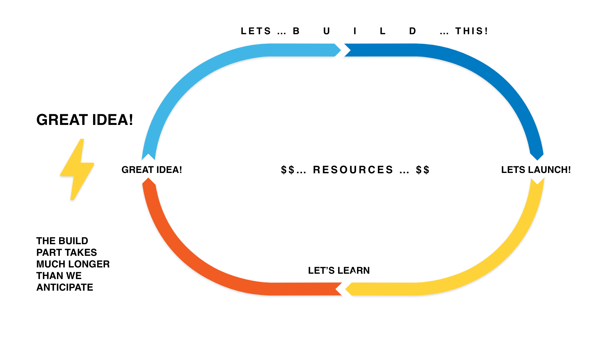
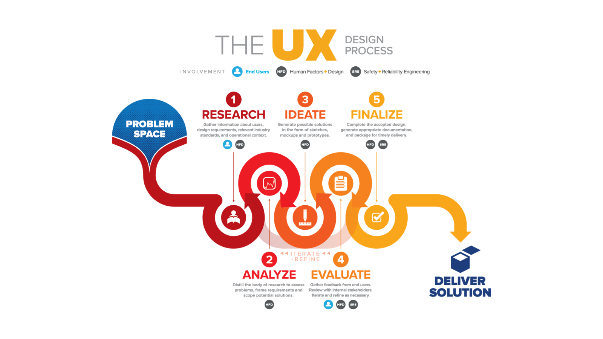
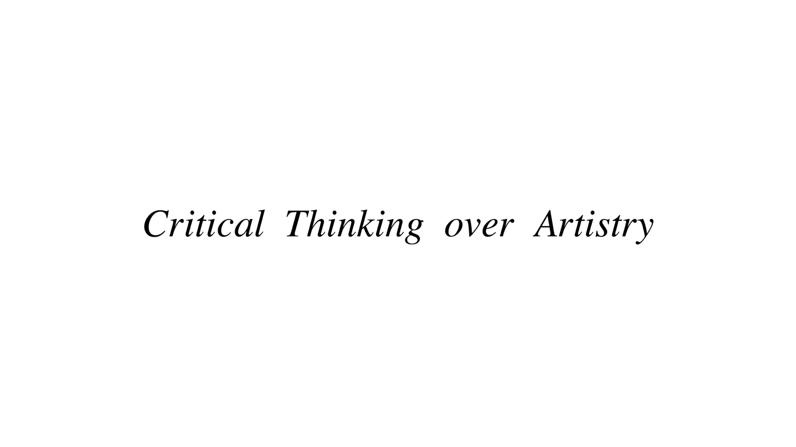
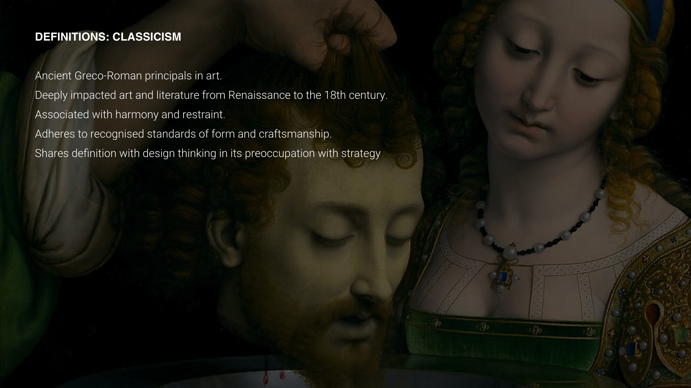
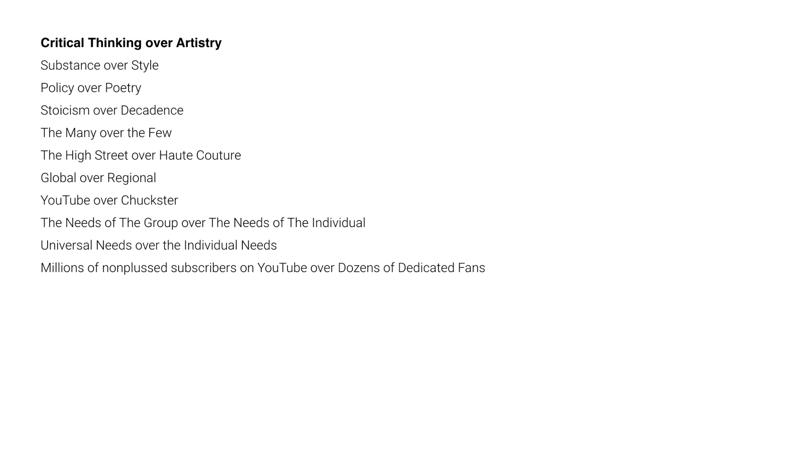
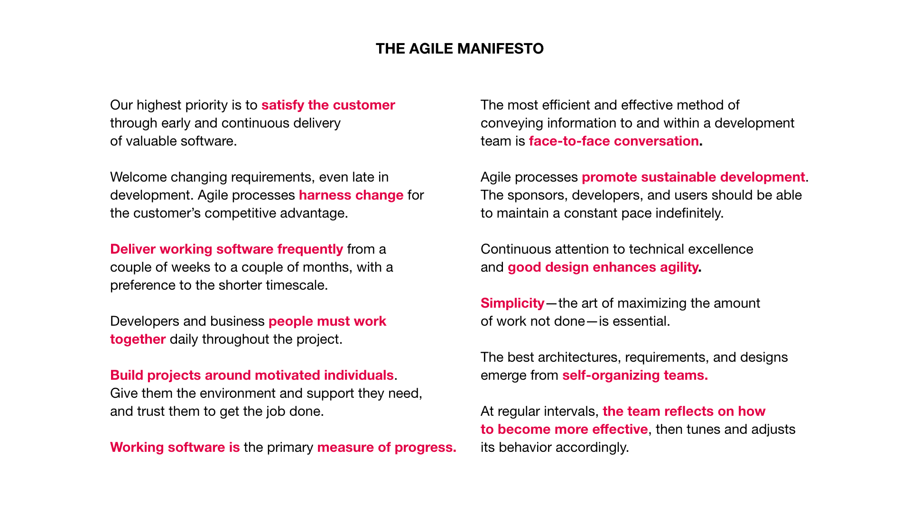
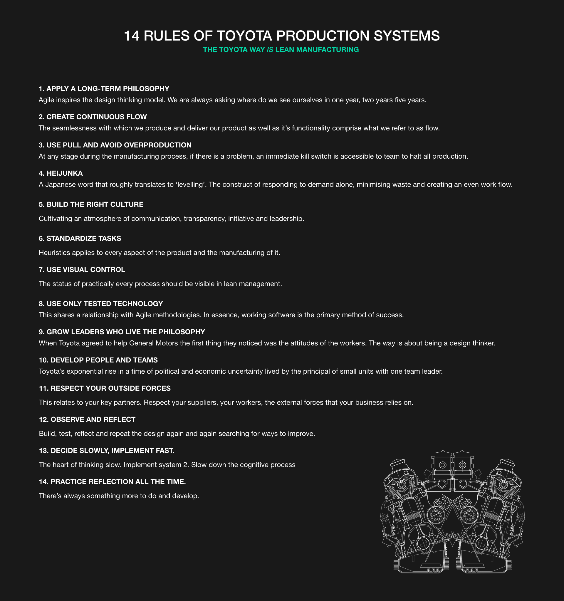

So let’s just take a minute to understand why we apply rapid prototyping to software design and we should adopt a design thinking mindset.
Around the time of the advent of the internet in 1984, corporations throughout the business world were highly specialised into specific industry sectors and as a direct result, because of their hyper-specialisation, they were incapable of adapting to the changes brought about by the rise of the internet.
With the specific example of Kodak, in 1991 they enjoyed a market value of about $30 billion but by 2012, they filed for bankruptcy. Their value today floats around $400 million.

Tectonic plates shifted under the feet of other industry giants like major telecommunications companies who saw the rise of online messaging platforms like Facebook, Whatsapp and Instagram. Video rental stores, travel agencies, music, bookstores and even banks witnessed permanent change if not total annihilation.
What equally became apparent was that working with the internet required a rapid response to the ever changing ways consumers were engaging with markets. If companies wanted to survive, they would have to ditch the overpowered mindset of managing value and less regard for creativity which was so widely practised throughout the 1980’s to early 90’s.
A workflow of adaptation over specialisation was required to respond to shifting trends in consumer behaviour and market disruption and thus agile methodologies like Design thinking were born.



—-




And it's also about Critical Thinking over Assumptions and 'Experience'.
It’s about form and function.



It’s still beautiful but not decadent.



And we have some great rules.
